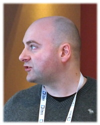
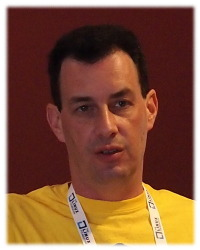

The next steps for userfaultfd()
In the 4.11 kernel, Arcangeli said, userfaultfd() can handle
faults for missing pages, including anonymous, hugetlbfs, and shared-memory
pages. There is also handling for a number of "non-cooperative events"

In particular, Arcangeli is looking at write-protect faults, where the page is present in memory but is not accessible for writing. There are a number of use cases for this feature, many based on the idea that it allows the efficient removal of a range of memory from a region. That can be done with munmap() as well, but that results in split virtual memory area (VMA) structures and thus hurts performance.
One potential use is efficient live snapshotting of running processes. The process could create a thread that would write the relevant memory to the snapshot. Memory that has been so written would then be write protected, generating faults when the main process tries to write there. Those faults can be used to copy the modified pages (and only those) to the snapshot. This feature could also be used to throttle copy-on-write faults, which are blamed for latency issues in some applications (Redis, for example).
Another possible use case is getting rid of the write bits in language runtime engines. Getting faults on writes would allow the runtime to efficiently track which pages have been written to. Beyond that, it could help improve the robustness of shared-memory applications by catching writes to file holes. It could be used to notice when a malicious guest is trying to circumvent the balloon driver and use more memory than it has been allocated, implement distributed shared memory, or implement the long-desired volatile ranges functionality.
At the moment, he has handling of write-protect faults working but it
reports all faults, not just those in the regions requested by the

Rapoport talked briefly about the non-cooperative userfaultfd() mode, which was merged for the 4.11 kernel. It has been added mainly for the container case; it allows, for example, the efficient checkpointing of containers. Recent work has added events for fork(), mremap(), and munmap(), but there are still some holes, including the fallocate() PUNCH_HOLE command and madvise(MADV_FREE).
The handling of events is currently asynchronous, but, for this case, Rapoport said, there would be value in supporting synchronous events as well. There are also problems with pages shared between multiple processes resulting in the creation of multiple copies. Fixing that would require an operation to inject a single page into multiple address spaces at once.
Perhaps the trickiest remaining problem, though, is using
userfaultfd() on processes that are,
themselves, using userfaultfd(). Fixing that will require adding
a mechanism that allows the chaining of events. The first process (the
checkpoint/restart mechanism, for example) would get all events, including
a notification when the monitored process starts using
userfaultfd() too. After that, events could be handled directly or
passed down to the next level. There are a number of unanswered questions
around nested use of userfaultfd(), though, so a complete solution
is probably some time away.
| Index entries for this article | |
|---|---|
| Kernel | userfaultfd() |
| Conference | Storage, Filesystem, and Memory-Management Summit/2017 |
Posted Mar 29, 2017 16:12 UTC (Wed)
by Sesse (subscriber, #53779)
[Link]
The next steps for userfaultfd()